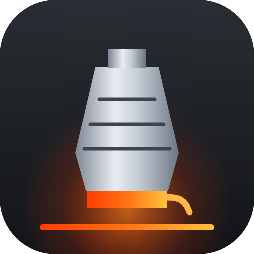

Iron Making
For Windows · Mac · Office PC
Install Iron Making on this computer
Gets its own icon in the Start menu / Dock, opens in its own window, works offline and updates itself. Free download, about 18 MB.
Open without installingInstalled ✓
Open Iron Making from the Start menu (Windows) or the Dock / Launchpad (Mac). Sign in with Google, your email or your login ID.
Open Iron MakingOther ways
No install (office PC)
A folder you unzip and open in any browser — good for office computers where you cannot install apps.
Download zipAndroid phone
Get Iron Making from Google Play.
Google PlaySend this page to your computer
Opened this on your phone? Share the link and open it on your PC or Mac.
The computer version opens for logins the admin has allowed. If you see "Locked by the admin", tap Request access. · Iron Making by Niteen Kumar